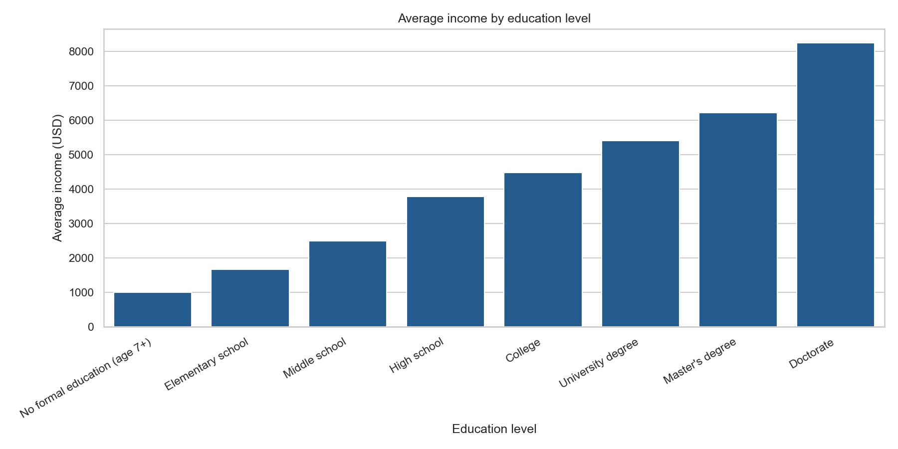
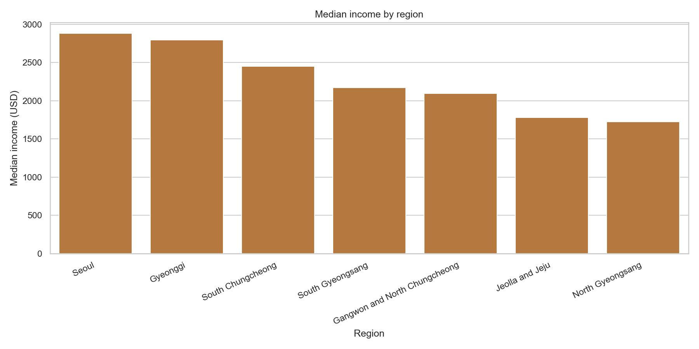
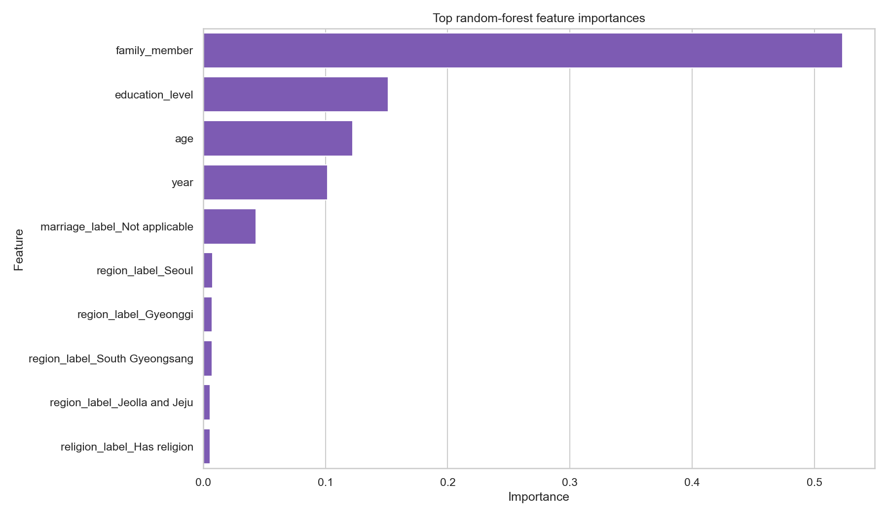

89,935
Valid records used in the upgraded analysis layer
This project started as a notebook about education and income. It now works as a stronger portfolio case because the analysis is reproducible in English, the benchmark is broader, and the final conclusion is more honest about what education can and cannot explain by itself.
The repository asks whether education alone is enough to explain income differences in Korean welfare microdata, or whether a more complete socioeconomic model changes the interpretation.
The descriptive layer supports the original intuition: income rises steadily across the education ladder and Seoul leads the regional distribution. That gives the project a clear socioeconomic narrative before any model is trained.


The improved workflow compares three benchmarks instead of stopping at the original one-feature model.
| Model | MAE (USD) | RMSE (USD) | R² |
|---|---|---|---|
| Education-only linear regression | 1,345.40 | 1,762.56 | 0.294 |
| Multivariable linear regression | 1,049.83 | 1,414.49 | 0.545 |
| Multivariable random forest | 908.88 | 1,279.94 | 0.628 |

The stronger conclusion is not just that education matters. The stronger conclusion is that education matters within a wider socioeconomic structure. The original notebook found real signal, but the upgraded model shows that household structure and lifecycle effects add major explanatory power.
That makes the project more persuasive for analytics, policy, and consulting positioning, especially when the audience wants evidence of methodological maturity rather than a single interesting chart.